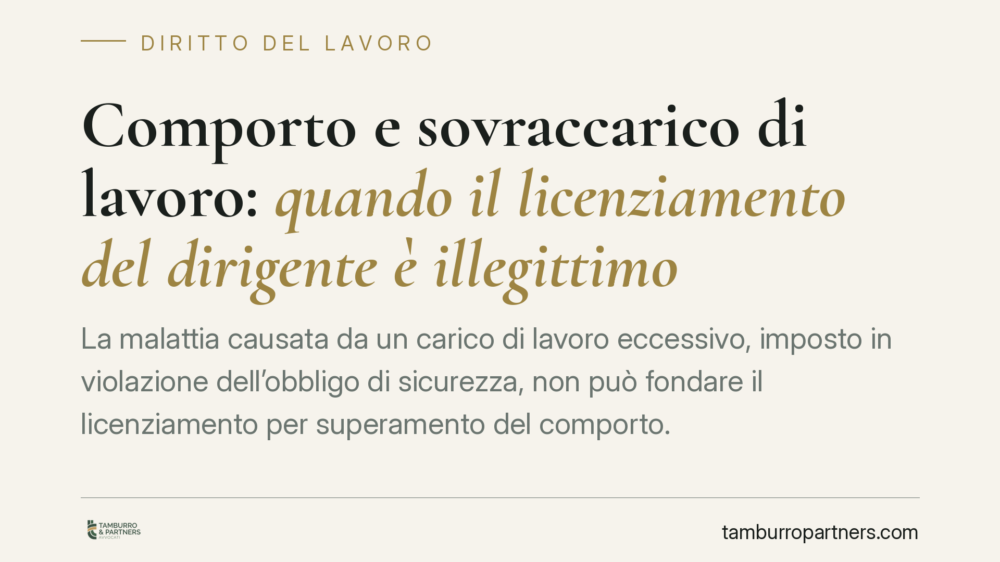

Comporto e sovraccarico di lavoro: quando il licenziamento del dirigente è illegittimo
La malattia causata da un carico di lavoro eccessivo, imposto in violazione dell'obbligo di sicurezza, non può fondare il licenziamento per superamento del comporto. Il principio riguarda anche i ruoli apicali, esclusi dai limiti ordinari d'orario ma non dalla tutela della salute. Vediamo quali sono i presupposti, come funziona l'onere della prova e cosa documentare in concreto.

Il fatto e la questione
Un direttore di ipermercato viene licenziato per superamento del periodo di comporto, cioè per aver esaurito il limite di assenze retribuite tollerate durante la malattia. La difesa del lavoratore sostiene che le patologie fossero riconducibili a un carico di lavoro sproporzionato, imposto dall'azienda in violazione dell'obbligo di tutela dell'integrità psicofisica. La vicenda arriva all'attenzione della Corte di Cassazione, che affronta un nodo ricorrente: le assenze causate da un inadempimento datoriale possono essere computate nel comporto?
Nota redazionale sugli estremi. Gli estremi esatti della pronuncia (numero, sezione e data) vanno verificati alle fonti ufficiali prima di ogni utilizzo. Il principio di diritto qui esposto è comunque coerente con un orientamento consolidato della giurisprudenza di legittimità in materia di comporto e responsabilità datoriale.
Inquadramento normativo
Il periodo di comporto trova fondamento diretto nell'art. 2110 c.c., che disciplina la sospensione del rapporto durante la malattia e riconosce al lavoratore il diritto alla conservazione del posto entro un limite temporale (fissato dalla legge o dalla contrattazione collettiva). Superato quel limite, il datore può recedere.
Su questa base si innesta l'art. 2087 c.c., che impone all'imprenditore di adottare le misure necessarie a tutelare l'integrità fisica e la personalità morale dei prestatori. Il coordinamento tra le due norme è decisivo: se la malattia — e quindi l'assenza — deriva da un inadempimento all'obbligo di sicurezza (ad esempio un sovraccarico protratto e prevedibile), quelle giornate non possono essere addossate al lavoratore ai fini del comporto. Sarebbe iniquo far valere contro il dipendente una conseguenza prodotta dalla stessa condotta illecita del datore.
Questo non contraddice il fatto che alcune categorie — dirigenti, quadri direttivi e personale con potere di decisione autonomo — siano escluse dai limiti ordinari sulla durata dell'orario di lavoro ai sensi dell'art. 17, comma 5, D.lgs. 66/2003 (esclusione da verificare in relazione alla concreta autonomia del ruolo). L'esonero riguarda la disciplina dell'orario, non l'obbligo di sicurezza: la posizione apicale non autorizza a esporre il lavoratore a carichi lesivi della salute.
Il regime del licenziamento del dirigente
Una precisazione è necessaria. Al dirigente non si applica in senso proprio la tutela dell'art. 18 L. 300/1970: il rapporto dirigenziale è retto dal principio di libera recedibilità, temperato dalla nozione di *giustificatezza* del licenziamento elaborata dai contratti collettivi di categoria, che prevedono in genere un'indennità supplementare in caso di recesso ingiustificato.
Per i lavoratori subordinati non dirigenti, invece, la tutela varia in base alla data di assunzione: regime dell'art. 18 come riformato dalla L. 92/2012 (riforma Fornero) per gli assunti fino al 6 marzo 2015, e regime delle tutele crescenti del D.lgs. 23/2015 per gli assunti successivi. In entrambi i casi, un licenziamento fondato su assenze non computabili resta privo di base legittima.
Implicazioni pratiche
Il punto centrale è l'onere della prova del nesso causale. Non basta allegare la stanchezza: il lavoratore deve dimostrare che la patologia è collegata a un carico di lavoro anomalo e che tale carico deriva da un inadempimento datoriale. Occorrono, dunque, elementi concreti — orari effettivi, mole di attività, eventuali segnalazioni rimaste senza riscontro, documentazione clinica che colleghi la malattia alle condizioni lavorative.
Sul versante datoriale, il rischio è duplice: l'illegittimità del recesso e la potenziale responsabilità risarcitoria per violazione dell'art. 2087 c.c. La verifica preventiva della sostenibilità dei carichi assegnati diventa quindi parte della gestione del rischio.
Cosa fare in concreto
- Documenta i carichi: conserva orari reali, turni, comunicazioni sull'ampliamento delle mansioni e ogni dato che fotografi la mole di lavoro effettiva.
- Formalizza le segnalazioni: metti per iscritto (email, PEC) le criticità sul carico e le richieste di intervento, così da costituire prova della conoscenza da parte del datore.
- Raccogli la documentazione medica che possa collegare la patologia alle condizioni di lavoro, evitando genericità.
- Verifica il CCNL applicabile: individua il limite di comporto e, per i ruoli apicali, la disciplina della giustificatezza e dell'indennità supplementare.
- Sul versante aziendale, è opportuno monitorare i carichi assegnati ai ruoli apicali e conservare traccia delle misure organizzative adottate.
Disclaimer
Contributo informativo a cura di Tamburro & Partners - Avv. Giuseppe Tamburro. Non costituisce parere legale.
Ogni storia di lavoro ha i suoi tempi.
Se gestisci HR e vuoi un confronto su contenzioso, ispezioni o licenziamenti, scrivi allo studio. Ti rispondiamo entro un giorno lavorativo.